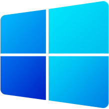

Why winlite10 ?
reasons to consider winlite10 over bloated version.

Smaller in size than bloated version
5.5 GB is reduced to 4.4 GB

Script support for existing installed win10.
Easy to install image or script to run on existing win10 or win11

Security maintained
Still have official support and Security maintained.

Winlite10Features
- Defender intact
- Basic apps included
- Bloat Removed
- No registry tampering
- No cortana
- No widgets